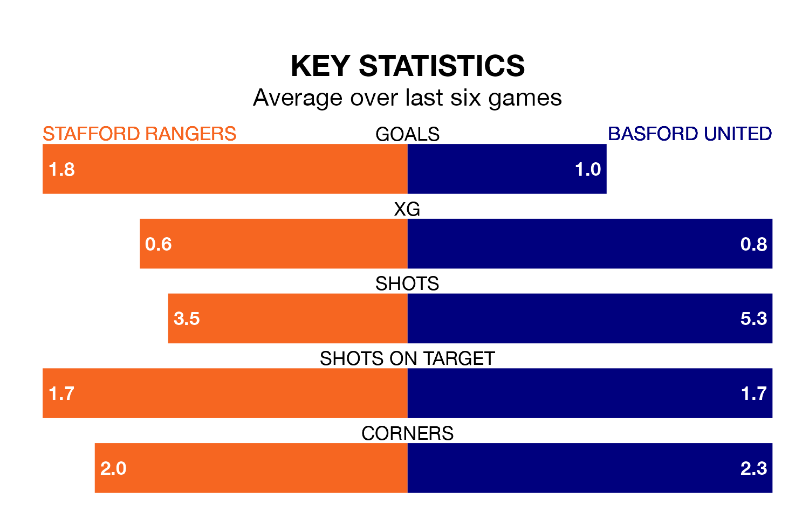

Struggling Stafford Rangers face Basford United at Marston Road on Saturday looking to build on a win in their last league outing.
After securing all three points with a 3-1 victory over Matlock Town on December 30, Stafford sit 21st in Northern Premier League.
They travel to play a Basford side 19th in the standings, who also won their last match, 2-1 against Marine.
Stafford are in disappointing form in Northern Premier League, with two wins and four losses from their last six games.
With a win and two draws over that period, Basford's form is slightly worse – they have taken five points from 18, compared to Rangers' six.
In the last five years, Stafford and Basford have played each other on seven occasions. Stafford won one of them, Basford three, and they drew three times.
On average, Stafford scored 0.9 goals and Basford 1.3 in those matches.
Their last meeting was on August 22, when Stafford won 2-1 away.
With 25 goals in 25 games so far this season, United are the league's second-lowest scorers with 1.0 goals per game. But they are conceding fewer than average too, letting in 39 goals at a rate of 1.6 per game.
The hosts are also below average scorers, with 1.1 goals per game, compared to a league average of 1.7. They have conceded 2.2 goals per game.
Updated: 12:57, 02/01/24